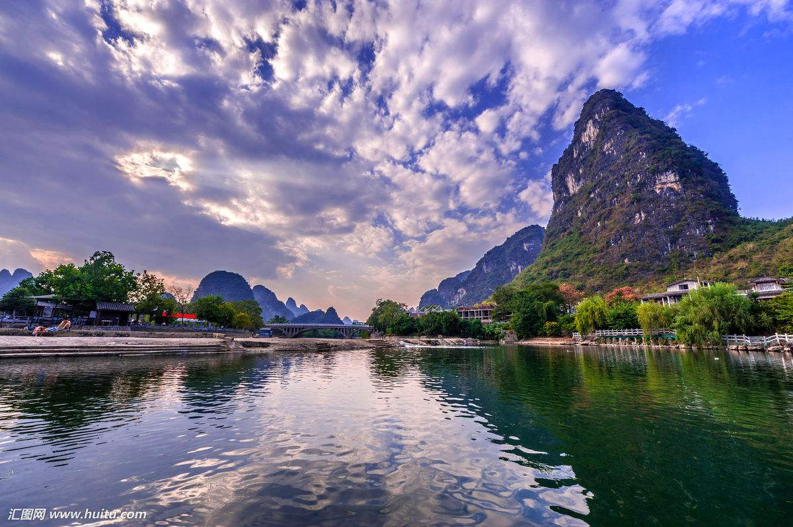
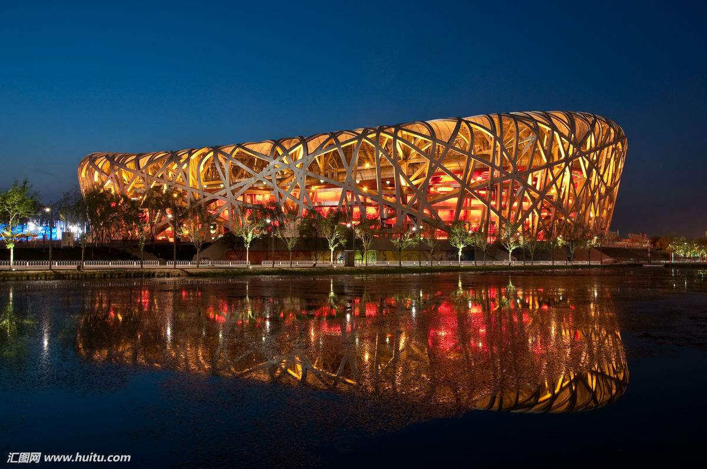
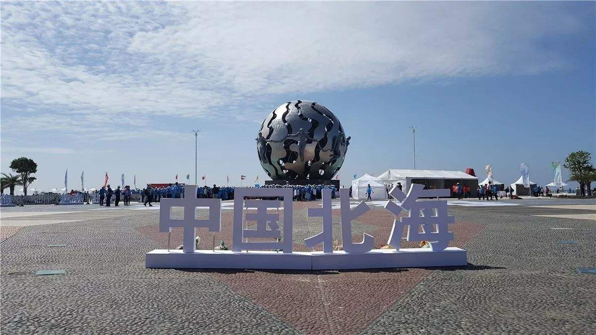

旅 行
-

-
桂林，简称桂，是世界著名的风景游览城市、国家对外开放重要的国际旅游城市、
国际性旅游航运枢纽、全国健康旅游示范基地、万年人类智慧圣地 ；国务院批复确定的国际旅游胜地 ；联合国世界旅游组织/亚太旅游协会旅游趋势与展望国际论坛永久举办地、中央军委桂林联勤保障中心驻地。
-
桂林北接湖南、贵州，西南连柳州，东邻贺州，
属山地丘陵地区及典型喀斯特岩溶地貌，
遍布全市的石灰岩经亿万年风化浸蚀.
-

-
北京位于华北平原北部，背靠燕山，毗邻天津市和河北省.北京的气候为典型的北温带半湿润大陆性季风气候
-
北京是首批国家历史文化名城和世界上拥有世界文化遗产数最多的城市，
三千多年的历史孕育了故宫、天坛、八达岭长城、颐和园等众多名胜古迹。
-

-
北海，是广西壮族自治区地级市，地处广西壮族自治区南端，北部湾东北岸。位于东经108°50′45″～109°47′28″，北纬20°26′～21°55′34″之间，西北距首府南宁206公里，
东距广东湛江198公里，东南距海南海口市147海里。
-
北海是古代“海上丝绸之路”的重要始发港，国家历史文化名城。从2005年开始，北海连续入选"中国十大宜居城市"之一。北海市面临的北部湾有丰富的海洋资源，为中国“四大渔场”之一，环北部湾城市群中心城市。2018年4月，
被国家市场监督管理总局划分为“2018年传销重点整治城市”.